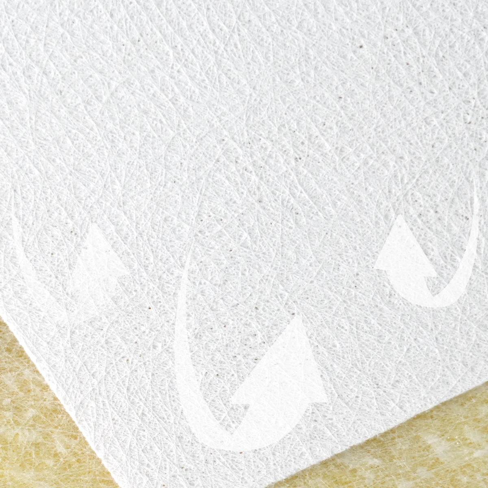

Useful reflection
Highly absorptive constructions may reduce early reflections that could reinforce speech in suitable room designs.
SOUND-REFLECTIVE ACOUSTIC FACING SOLUTIONS
Control Sound Reflection. Support Speech Clarity.
A fiberglass facing with selectable airflow resistance for ceiling panels requiring controlled reflection. Evaluate the grade with your acoustic core, complete panel construction and intended room design.

SOUND DISTRIBUTION MATTERS
Large rooms need useful sound distribution as well as absorption. Ceiling surface characteristics are one part of the room's acoustic design.
Highly absorptive constructions may reduce early reflections that could reinforce speech in suitable room designs.
Room geometry and ceiling configuration can produce different sound levels across seating areas.
Excessive or delayed reflections may create reverberation and reduce speech intelligibility.
An overly open facing may allow more interaction with the porous core than intended for a reflective ceiling zone.

ENGINEERED FOR SOUND CONTROL
The coating and fiberglass substrate provide different material functions. Select them around the intended reflection and absorption balance.
Reduced airflow changes the interaction between the surface and the underlying acoustic core.
Higher facing resistance can increase surface reflection in suitable panel constructions.
Uniform coating distribution helps maintain an even appearance across the ceiling.
A stable fiberglass substrate supports handling, lamination, cutting and conversion into panels.
FIND THE RIGHT ACOUSTIC BALANCE
Permeability is a selection variable rather than a universal performance ranking. Evaluate the facing against the core, coating coverage and intended room response.

An open coating allows greater airflow and acoustic interaction with porous mineral wool or glass wool cores in sound-absorbing panels.

Intermediate resistance provides a starting direction for ceiling systems requiring a mix of reflection and absorption.

Reduced airflow and higher resistance can support reflective ceiling areas, subject to the complete panel and room design.
Customized coating coverage and airflow resistance can be evaluated for defined reflection, absorption or speech-clarity targets. Available permeability grades should be confirmed with GRECHO.
HOW IT WORKS
The facing supplies the surface resistance; mineral wool or glass wool provides the underlying panel structure. Their acoustic behavior depends on the assembled system.

A lightweight fiberglass veil with controlled coating provides reduced airflow and consistent coverage.
The porous core contributes to the complete ceiling system's acoustic behavior; its interaction with sound is influenced by the facing.
The facing, acoustic core, panel thickness, mounting arrangement, and ceiling geometry should be evaluated together to achieve the intended balance of reflection and absorption.
TECHNICAL INFORMATION
Confirm the resistance grade and other material characteristics against the intended panel construction.
| Parameter | Specification |
|---|---|
| Product | Low-Air-Permeability Fiberglass Coated Veil |
| Base Material | Fiberglass Veil |
| Surface Treatment | Low-Permeability Coating |
| Color | White / Customizable |
| Surface Finish | Fine, Uniform Texture |
| Basis Weight | Grade-Dependent / Customizable |
| Roll Width | Customizable |
| Air Permeability | Low / Selectable by Grade |
| Airflow Resistance | Higher-Resistance Grades Available |
| Coating Coverage | Grade-Dependent / Customizable |
| Dimensional Stability | Fiberglass-Based Structure |
| Compatible Core | Mineral Wool / Glass Wool |
| Acoustic Response | Finished-Panel Dependent |
| Supply Form | Rolls |
| Customization | Width, Weight, Coating & Airflow Resistance |
Technical specifications, airflow resistance, reflection characteristics, and acoustic performance vary by product grade and finished-panel construction. Testing is required to establish actual acoustic performance.
APPLICATIONS
Use reflective and absorptive ceiling areas according to the room's acoustic strategy.

Selected reflective constructions may help reinforce speech when combined with suitable absorption elsewhere, without excessive reverberation.

Evaluate reflection characteristics with the ceiling geometry and complementary absorption to support sound distribution.

Different ceiling zones can provide reflective and absorptive responses for the room's intended activities.

Coordinate reflection, absorption and room geometry when evaluating the complete ceiling system.
FROM SAMPLE TO PRODUCTION
Confirm material behavior through production, finished-panel and room-level evaluation where relevant.
Share the core, dimensions, preferred airflow characteristics and intended room application.
Check coating uniformity, texture, permeability and relevant facing properties.
Trial lamination with your core, then assess absorption and reflection using suitable acoustic testing methods.
Agree roll dimensions, coating coverage, airflow resistance and other technical requirements.
FAQ
No. Excessive reflection can increase reverberation or create echoes. Select the facing for the room's acoustic design rather than permeability alone.
The facing, core, frequency and complete panel construction affect the acoustic response. Room performance also depends on reflection timing, geometry, background noise and absorption elsewhere.
Suitable systems can be evaluated. Final compatibility depends on the core, adhesive and production process.
LET'S FIND YOUR SOLUTION
Share the panel structure, intended room application and acoustic targets to discuss a facing grade and sample evaluation.